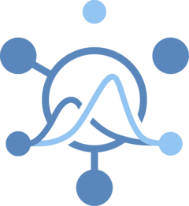

Hubverse Dependabot configuration setup
Source:R/use_hub_dependabot.R
use_hub_dependabot.RdSets up Dependabot
for a hub that is hosted on GitHub, so that the actions used by the hub's
GitHub Actions workflows are kept up to date. The configuration is hosted in
repository hubverse-org/hubverse-actions under dependabot/.
The function creates the .github/ directory if necessary and downloads the
configuration to .github/dependabot.yml.
Arguments
- ref
Desired Git reference, usually the name of a tag (
"v0.1.0") or branch ("main", including branch names containing slashes such as"ak/my-feature/27"). Other possibilities include a commit SHA ("d1c516d") or"HEAD"(meaning "tip of remote's default branch"). If not specified, defaults to the latest published release ofhubverse-org/hubverse-actions(https://github.com/hubverse-org/hubverse-actions/releases)
Value
The path of the configuration file, invisibly, or an empty
character vector if an existing file was kept in its place. Called for
the side effect of writing .github/dependabot.yml.
Details
The workflows added by use_hub_github_action() reference the actions they
use by major version, such as actions/checkout@v4. Minor and patch
releases of those actions reach the hub with no change to the workflow. A
new major version does not, so the hub stays on the old one until the
workflow is edited by hand. With this configuration in place, Dependabot
opens a pull request in the hub for each new major version, once a week.
Dependabot reads the file from the hub's default branch, so it takes effect
once committed there.
The file is written to the root of the hub, located as described in
use_hub_github_action().
An existing .github/dependabot.yml is treated as use_hub_github_action()
treats an existing workflow: it is left alone when its contents match what
is being downloaded. Otherwise, an interactive session asks before
overwriting it, while a non-interactive one overwrites it and reports that
it has done so. A hub that already uses Dependabot for another ecosystem
should add the github-actions entry from the downloaded configuration to
its existing file instead of replacing the file.